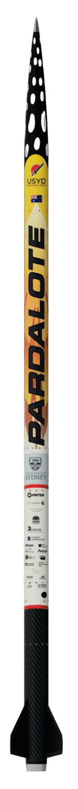

Project Overview
Pardalote, powered by the third iteration of our SRAD hybrid engine, builds on the legacy and extensive testing campaigns of its predecessors, Waratah and Wattle.
Engineered using our in-house hybrid engine simulation suite, Pardalote has undergone rigorous validation from pressure testing our feed system to live hot fires at our dedicated facility in Arthursleigh Farm, University of Sydney. Every test redefines our propulsion system, constantly pushing new ideas and innovative engineering practices, guaranteeing competitional performance and spectacular views!
This cutting-edge project embodies our team’s relentless commitment, technical excellence, and pioneering spirit, pushing the frontiers of student engineering ever further.
Flight Performance
Trophies
- 3x
- 1st 10K SRAD Hybrid — AURC/IREC
- 1st Overall IREC 2025
